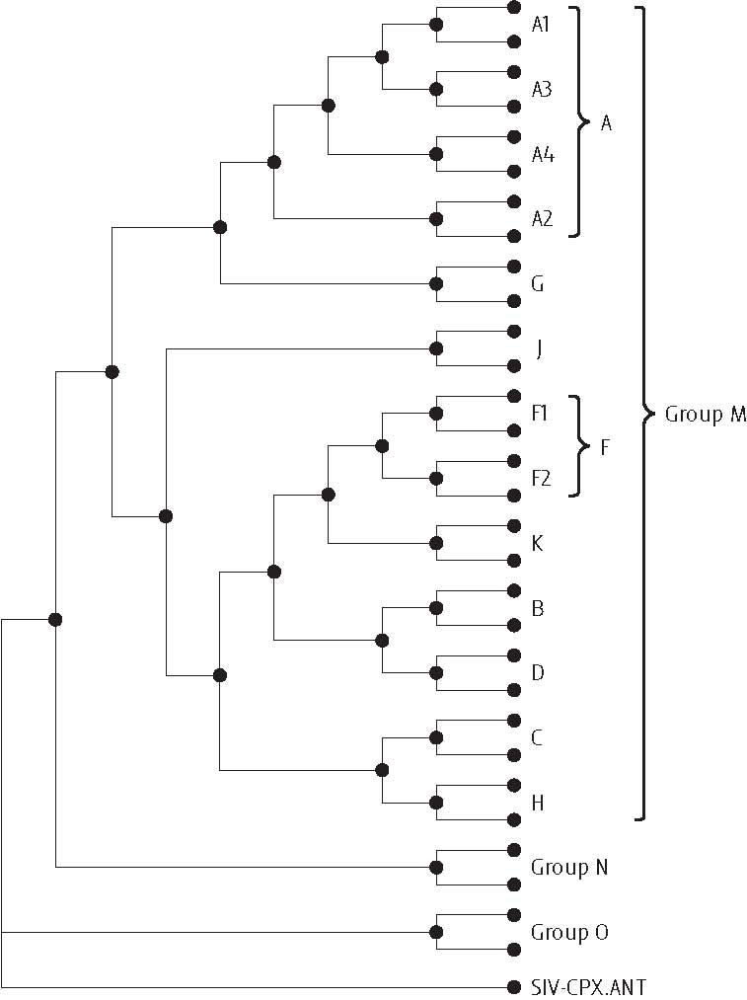
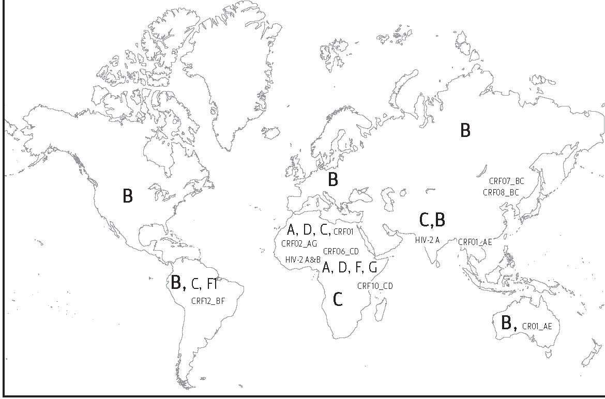

Biology and Variation in HIV-2 and HIV-1
Phyllis J. Kanki and Seema Thakore Meloni
Harvard School of Public Health AIDS Initiative, Harvard School of Public Health, United States
Human immunodeficiency virus types 1 and 2 (HIV-1 and HIV-2) are members of the Lentivirus genus of the Retroviridae family of RNA viruses and are 50% similar at the genetic level. HIV‑2, although more closely related to the simian immunodeficiency virus (SIV), is the second human immunodeficiency virus and constitutes the closest known human virus related to the prototype AIDS virus, HIV‑1. HIV-2 shares many virologic and biologic features with HIV-1.1 Like other retroviruses, both HIVs induce lifelong infection, with permanent integration of viral genetic material into the host cell’s DNA. The enzyme responsible for viral replication, reverse transcriptase, is error-prone, which results in considerable genetic variation. This variation is more pronounced in the genes that encode the outer envelope regions compared with the polymerase (pol) and group-specific antigen (gag) genes, which are more genetically constrained from variability. Both HIV-1 and HIV-2 enter susceptible cells via the same primary receptor, the CD4, but secondary co-receptors may differ between the two viruses. As a result of these similarities in cell receptors, both viruses are transmitted by the same routes and infect the same cell types in people.
HIV-2
Although HIV-1 and HIV-2 are highly related lentiviruses, they maintain some distinct epidemiologic and biologic characteristics.1,2 HIV-2 is largely confined to West Africa, while HIV-1 infection is prevalent worldwide and accounts for approximately 95% of all HIV infections globally. Importantly, disease progression to AIDS occurs much more slowly in HIV-2. In comparison to HIV-1, these biologically relevant characteristics of HIV-2 infection in vivo appear to model those of an attenuated HIV infection. To date, the precise mechanisms responsible for this attenuated phenotype of HIV-2 remain unclear. However, HIV-2, like HIV-1, causes AIDS, although more slowly, and it was based on these initial similarities that some believed that HIV-2 might cause a second worldwide AIDS epidemic. Now, 23 years after the discovery of HIV-2, no such epidemic has occurred. Rather, research studies conducted both in the laboratory and in HIV-2-infected people in West Africa have highlighted distinct biological differences between these related viruses.1,2
History and Distribution of HIV-2 in Africa
It is now recognized that HIV and closely related viruses in primates, termed SIVs, exist. The close antigenic relatedness of both SIV and HIV-2 to the prototype HIV-1 virus prompted both the discovery and further classification of these related viruses.3-5 When sera from West African female sex workers were screened for antibodies to HIV‑1 antigens, the antibodies revealed extensive cross‑reactivity for the virus gag antigens but minimal antibody binding reactivity for the HIV‑1 envelope.4 Yet, when the same West African human sera were assayed on SIV antigens, they reacted strongly with the envelope proteins as well as the gag antigens, suggesting infection with a virus that was more closely related to SIV than to HIV-1. As more sequence data became available from various HIV-2 and SIV strains, it has also become apparent that no branching order of divergence can be identified and that HIV-2 and SIV most probably share a common ancestor.6,7 Therefore, it is well recognized that HIV-2 is more closely related to SIV than to HIV-1. It has been estimated that the HIV‑1 and HIV‑2/SIV groups of viruses might have diverged from each other as recently as 50–60 years ago.8,9
The discovery of HIV-2 in Senegal, West Africa, in the mid-1980s prompted numerous studies to determine the geographic distribution and biologic significance. Through the use of type-specific serology assays, we now recognize that HIV-2 is prevalent in most West African countries, surprisingly a distinctly different worldwide distribution compared to that of HIV-1.10-12 In most other countries of West Africa, such as Burkina Faso, Ghana, Ivory Coast, Nigeria, and Mali, infection with HIV-1 is more prevalent than infection with HIV-2, ranging from a 3- to 24-fold rate ratio (HIV-1 versus HIV-2).13-18 Although recent national serosurveys have not distinguished these virus types, it is widely considered that HIV-2 prevalence rates are diminishing. This supports the hypotheses raised by Anderson and May, who analyzed the available biological and epidemiological data on HIV-1 and HIV-2 and used simple mathematical models to study the competition between the two viral types.19 The mathematical model of the concomitant transmission of the two viruses within the same sexually active population suggested a positive association between pathogenicity and reproductive success, indicating that HIV-1 would competitively displace HIV-2 in the long term. In our study of both viruses in Dakar, Senegal, over the past 20 years, we have also observed the decrease of HIV-2 prevalence in registered sex workers and a concomitant increase in HIV-1.20
Outside West Africa, sporadic reports of HIV-2 infection have been previously made in Portugal, Mozambique, Angola, southwestern India, and Brazil; these events are all related to the former ties Portugal had with West Africa.21 Portugal itself appears to have low but stable rates of HIV‑2 prevalence in the population.14 The other countries once shared common historical-political ties, with some economic trade relationships existing even today. As noted, HIV‑2 has been detected in some large cities in southwestern India,22,23 perhaps because of exchange with the former Portuguese colonies of Africa. Goa, a former Portuguese colony, situated south of Bombay on the western coast, has reported 4.9% HIV-2 and 9.8% HIV-1 infection rates in patients with sexually transmitted infections (STIs).22 To date, significant HIV-2 infection has not been reported in other parts of Asia.
HIV-2 Laboratory Diagnosis
The close relationship of HIV-2 to HIV-1 on a genetic and antigenic level has necessitated the development and use of type-specific assays in order to diagnose and distinguish these related viruses. The same methodologies and technologies for HIV-1 serologic testing, virus culture, and genetic diagnostics such as polymerase chain reaction (PCR) have been modified for HIV-2 diagnosis and improved over the years. Because most of the original HIV antibody tests were developed using HIV‑1 antigens, the degree of cross‑reactivity and specificity for HIV‑2 was highly variable.4,24 Most of the first-generation tests used whole virus antigens, where antigens such as p24gag and pol proteins (p66/p51) were well represented. These antigens are more strongly cross‑reactive between HIV-1 and HIV-2 compared to the envelope antigens, especially the external envelope protein, the gp120.24-26 In the early 1990s, most European nations, followed by the United States, incorporated HIV-2 testing into blood bank screening.27,28 The antibody tests used were Enzyme-Linked ImmunoSorbent Assays (ELISAs) with combined antigens of HIV-1 and HIV-2. Confirmation of HIV-2 serostatus requires an HIV-2-specific immunoblot (Western blot) or specific peptide assays. Immunoblots demonstrating a profile of major structural gene product recognition are typically used to confirm HIV-1 and HIV-2 diagnosis using standard criteria. HIV-2-specific diagnosis by immunoblot requires antibody reactivity to env + gag + pol antigens. In the absence of reactivity to gag or pol antigens, the presence of reactivity to two envelope antigens is required (gp120 and gp32, transmembrane protein).29
Various investigations have focused on identifying type‑specific antigens to allow confirmatory tests that will distinguish between HIV‑1 and HIV‑2. Most have been made as synthetic peptides,30-33 but some were larger bacterially expressed peptides,34,35 which vary in sensitivity and specificity. As most were selected for specificity, one might expect that sensitivity could be compromised. Thus, although appropriate for type‑specific confirmation, they may not be as useful as larger HIV‑2‑specific antigens for initial screening.
The various type-specific assays can yield a result of HIV-1 and HIV-2 positive status. The HIV dual antibody profile is characterized by antibodies with strong reactivity to the env antigens of both HIV-1 and HIV-2 by immunoblot and/or radioimmunoprecipitation analysis (RIPA).4,25,36-38 This may result from the extensive cross-reactivity that exists between the viruses and the lack of type-specificity of the assay employed. Several possible biologic explanations for this phenomenon can also be entertained, including dual infection by both viruses or infection with a recombinant virus. When human serum samples were tested in places such as Ivory Coast, Senegal, and Burkina Faso, a disproportionately large fraction of the samples often tested as “dual positive” because they appeared reactive on both HIV‑1 and HIV‑2 confirmatory tests.35,36,38,39 These sites have significant rates of both HIV-1 and HIV-2 infection, and distinction of viruses and designation of dual reactivity remains a diagnostic challenge for the typical HIV laboratory in geographic locales where both viruses are circulating. When rates of HIV-2 virus infection in a region or study have been low or absent, it is generally considered that the finding of dual HIV-1/HIV-2 infection is erroneous and likely due to cross-reactivity from HIV-1 infection alone.
Lowered Sexual and Perinatal Transmission Rates
Although HIV-1 and HIV-2 are thought to be transmitted through human populations by the same modes of transmission, the epidemiologic distribution suggests that the rates of these transmissions may be distinct. In West Africa, the spread of HIV-1 has exceeded that of HIV-2 over the past two decades.20 During an eight‑year period of follow-up in Senegal, there was a 26‑fold increase in HIV‑1 infection rates, whereas HIV‑2 infection rates remained relatively constant.40,41 These studies indicated that HIV‑2 may have been in the human population in Africa at least as long as HIV‑1, and in West Africa, HIV‑2 has apparently been present considerably longer. The relative lack of significant HIV‑2 prevalence in Europe, North America, and Asia in the face of HIV‑1 expansion also supports the general notion that HIV‑2 is spread less efficiently than HIV‑1.21,42-48
HIV-2 infection transmitted by blood and blood products has been reported in case reports; however, widespread HIV testing in blood bank settings has most probably limited the risk of this mode of transmission.49,50 The most common modes of HIV transmission in HIV-2-endemic areas are perinatal and heterosexual transmission; since most West African countries have been afflicted with both HIV-1 and HIV-2 infections, direct comparison of transmission rates between the two viruses has been possible. In Senegalese female sex workers followed over an 11-year period, the annual incidence of HIV-1 dramatically increased, with an 18-fold increase in risk per year and a 13-fold increase in risk over the entire study period. By contrast, the incidence of HIV-2 remained stable, despite higher HIV-2 prevalence.10,41 In this high-risk group, the heterosexual transmission of HIV-2 was significantly slower than that of HIV-1, which strongly suggests differences in the heterosexual transmission potential of these two related immunodeficiency viruses.
Gilbert et al performed a modeling study of HIV-2 and HIV-1 to compare transmission potentials, where new nonparametric competing-risks failure-time methods were used, which minimized modeling assumptions and controlled for risk factors for HIV infection. Observing 1,948 women followed from 1985 to 1999, we compared the male-to-female transmission probability of HIV-1 and HIV-2 per infectious sexual exposure. The HIV-1 versus HIV-2 infectivity ratio over time was estimated by nonparametric kernel smoothing of the HIV-1/HIV-2 infection hazard ratio in sex workers adjusted by an estimate of the relative HIV-1 versus HIV-2 prevalence in the partner population. HIV-1 was found to be significantly more infectious than HIV-2 throughout the follow-up period (P<.0001). The HIV-1/HIV-2 infectivity ratio was inferred to be approximately constant over time, with an estimated ratio of 3.55.51
Maternal or perinatal transmission of HIV‑2 also appears to be less efficient than for HIV‑1.52-57 Perinatal transmission of HIV-2 and HIV-1 has been studied in Guinea Bissau, Ivory Coast, France, and Senegal, with all demonstrating extremely low rates of perinatal transmission of HIV-2 (0%–3.7% transmission) in contrast to that of HIV-1 (15%–45% transmission).52,53,57-59 In studies that measured perinatal transmission of both viruses, the rate of HIV-1 transmission was 10- to 20-fold higher than that of HIV-2 (see Table 1).
Table 1. Key differences between HIV-1 and HIV-2 |
||
|
HIV-1 |
HIV-2 |
|
|
Geographic Distribution |
Worldwide |
West Africa |
|
Heterosexual Transmission |
3- to 6-fold lower |
|
|
Perinatal Transmission |
15%–45% |
0%–5% |
|
Time to AIDS |
7–10 years |
10–25 years |
|
Treatment |
NNRTIs* ineffective |
|
*Non-nucleoside reverse transcriptase inhibitors
HIV-2-Related Disease and Differences in Disease Progression
Early case reports described HIV‑2‑infected people with disease consistent with an AIDS diagnosis.60-62 The disease characteristics, including tuberculosis, chronic diarrhea, and Candida infections, were similar to diseases seen in HIV‑1‑associated AIDS in the same settings.62-64 Central nervous system involvement has also occasionally been described in HIV‑2 AIDS cases.65, 66 However, classical African AIDS comorbidities, such as tuberculosis, often have had only a weak epidemiological association with HIV‑2, even in HIV‑2-endemic areas.67-69
In Dakar, Senegal, our prospective studies conducted in a registered female sex worker cohort have provided the unique opportunity of measuring the infection and progression rates of both HIV-1 and HIV-2 infections.67,68,70,71 Importantly, these prospective studies have compared disease progression in individuals with known times of infection, and the cohort has now been observed for more than 22 years, representing one of the longest HIV natural-history studies in the literature. The Kaplan-Meier analysis of HIV-2-infected individuals indicates that 85% (95% CI, 50%–96%) remain AIDS-free after 8 years of HIV-2 infection.68 These differences in survival probabilities between HIV-2 and HIV-1 were also seen for Centers for Disease Control and Prevention (CDC) stage IV disease and CD4 lymphocyte counts below 400 cells/mm3 and below 200 cells/mm3, as outcomes.
In our prospective study of HIV-2-infected individuals, we also identified individuals who fit a definition of long-term nonprogression and could determine a rate of this phenotype in the study population,68,71 also noted by others.72 Using a definition of long-term nonprogression of greater than or equal to eight years of infection in the absence of AIDS or related symptoms and stable CD4 (T4) lymphocyte counts greater than 500 cells/mm3, we found that 39 of 41 women (95%) could be classified as long-term nonprogressors.
Since it is well recognized that progression to AIDS correlates with clinical immunosuppression, studies to evaluate the level of immunocompromise with HIV-2 infection have been conducted to further define the clinical significance of HIV-2 infection. In cross-sectional studies, T4 lymphocyte counts and T4:T8 ratios appeared reduced in HIV‑2‑infected subjects, but less dramatically than in HIV‑1‑infected subjects.68,73-75 Similarly, alterations in T-cell subsets evaluated prospectively showed similar results, where immunosuppression was significantly slower to develop in HIV-2-infected people than in those infected by HIV-1 and could not be demonstrated in all subjects.68,73 Skin-test anergy to various antigens was also less pronounced in HIV‑2 infection.68,73 Together, these studies of HIV-2 infection in populations in West Africa conducted in the 1990s demonstrated that the rate of immunosuppression and development of AIDS was significantly slower when compared with HIV-1 infection.
These distinct differences in pathogenicity provide a unique opportunity to identify viral and host immune mechanisms involved in a closely related and relevant virus system that is predicted to have a significantly slower course of progression. Evidence for a lower viral burden in HIV-2-infected individuals has been reported from both virus-isolation and PCR studies.76-82 The isolation rate of HIV-2 from peripheral blood mononuclear cells or plasma of asymptomatic HIV-2-infected individuals was lower than the isolation rate for HIV-1.80 At lower CD4 lymphocyte counts, virus isolation was equally efficient in both infections. Studies in Gambia and Senegal suggest that proviral HIV-2 copies increase with disease development and the drop of CD4 lymphocytes.79,82 We developed an internally controlled quantitative reverse transcriptase–polymerase chain reaction to measure HIV-2 viral load and determined levels of plasma virus in the cohort of registered commercial sex workers in Dakar, Senegal.77 HIV-2 viral RNA was detectable in 56% of all samples tested; the median load was 141 copies/mL. Levels of HIV-2 viral RNA in the plasma were inversely related to CD4 cell counts. HIV-2 and HIV-1 viral loads were compared among newly infected women in the cohort; the median viral load was 30-fold lower in the HIV-2-infected women (P<.001, Wilcoxon rank-sum test), irrespective of the length of time infected. This suggests that plasma viremia is linked to the differences in the pathogenicity of the two viruses.77 Similar findings have also been described in Gambia and Guinea Bissau.78,83
Levels of virus in the plasma are closely related to the pathogenicity of HIV-1, and infection with HIV-2 leads to a significantly lower plasma viral load. To further identify the source of this difference, we measured both viral RNA and proviral DNA in matched samples from 34 HIV-2-infected individuals. The median level of HIV-2 RNA for the group was 189 copies/mL. Levels of HIV-2 RNA were below the limit of detection in nearly half the women, consistent with what we have previously reported in this population.76 Levels of HIV-2 proviral DNA were similar to those of HIV-1 but failed to correlate with levels of viral RNA. Thus, it appears that significant differences occur upon expression, release, and/or maintenance of virions in the bloodstream. Our laboratory has gone on to demonstrate that HIV-2 is able to establish a stable, integrated proviral infection in vivo, but that accumulation of viral mRNA is attenuated in HIV-2 infection, relative to HIV-1. The differences in viral mRNA are consistent with the differences in plasma viral loads between HIV-1 and HIV-2, and suggest that lower plasma viral loads, and possibly the attenuated pathogenesis of HIV-2, can be explained by lower rates of viral replication in vivo.84 Further comparative studies of both viral and host factors that may affect expression will be useful for understanding the differences between HIV-1 and HIV-2 pathogenesis.
Since slower disease course appears to be common in HIV-2 infection, we reasoned that certain subsets of the population would possess host characteristics that might predispose them to a more rapid disease course. We conducted a case-control study investigating possible associations between human leukocyte antigen (HLA) and the risk of disease progression in HIV-2.85 The HLA class I status was molecularly typed in female sex workers from the Dakar, Senegal, cohort; HLA B35 was associated with lack of p26 antibodies (P<.05) and higher risk of disease progression. The same association was found for the class I haplotypes B35-Cw4 and A23-Cw7 (P<.05), similar to the association with HIV-1.86 Our data show that certain HLA molecules are associated with risk of disease progression in HIV-2; some of the alleles and haplotypes involved in susceptibility to disease are similar for both HIV-1 and HIV-2. Therefore, certain genetic factors may be shared by HIV-1 and HIV-2 with respect to susceptibility to enhanced disease progression.
HIV-2 Treatment
It is generally assumed that drugs that have efficacy against HIV‑1 will be effective against HIV‑2. However, with the exception of a few in vitro analyses,87 most HIV‑1 drugs have not been thoroughly tested for activity against HIV‑2. In addition, experience with antiretrovirals (ARVs) has been largely confined to the developed world, where HIV-1 non-B subtypes and HIV-2 are rarer. Hence, it is still not clear that current ARV therapeutic regimes will be as efficacious given differences in virus subtype or type. Further, the natural history of HIV/AIDS in the developing world does differ from the disease in the developed world, where distinct endemic opportunistic infections, common infectious disease agents, and clinical standards of care may contribute to these differences. This suggests that certain aspects of HIV clinical management in developing-world settings will also require additional consideration. Antiretroviral therapy (ART) is directed at lowering in vivo virus replication. Clinical management and treatment decisions have been difficult in the absence of a commercially available HIV-2 plasma viral load assay.
We have had limited experience in the therapy of HIV-2 patients in the United States, where it appears that standard combination ART can readily reduce viral load levels below detection.88-90 To date, only case series and reports have evaluated the efficacy of HIV-1 ART regimens for the treatment of HIV-2 infection; clearly, clinical trials are needed in the future. Through a case series of 10 HIV-2-treated patients in the United States, Mullins et al reported that HIV-1 regimens have a reduced efficacy in the treatment of HIV-2 disease. From the few published studies,90,91 including our own, we are not able to adequately assess the clinical utility of the non-nucleoside reverse transcriptase inhibitor (NNRTI) class of antivirals as a treatment option for HIV-2, although in vitro data suggest that this class of drugs may be ineffective for treating HIV-2.92 Similar to our observations, it appears that HIV-2 differs from HIV-1 in the risk of disease progression at any given CD4 cell count and may therefore have different implications for the timing and management of ARV therapy.91
The reverse transcriptase (RT) and protease genes from 12 HIV-2-infected individuals who had been treated with ARVs were examined for the presence of drug-resistance mutations. Four individuals carried virus genotypes with amino acid substitutions potentially associated with resistance to nucleoside analogues: two at codon 70 (KR) and two at codon 184 (MV); the latter two patients harbored a codon Q151M mutation, which has been associated with multidrug resistance in HIV-1. Substitutions associated with resistance to protease inhibitors at codon 46 were observed in all individuals. Moreover, minor resistance mutations, as well as new ones, were often seen in the protease gene. Thus, in limited studies, amino acid changes in the HIV-2 RT and protease genes, which could be associated with drug resistance, seem to occur at positions identical to those for HIV-1.93
HIV-1 Subtypes
In the early 1990s, molecular techniques to sequence and classify HIV viruses became more available. These advances allowed for further characterization of HIV infections worldwide, with particular emphasis on Africa, which bears the highest rates of infection. It soon became apparent that genetic variation in HIV-1 led to distinct strains, subtypes, or clades. The genetic variability of HIV has been attributed to the lack of proofreading ability of the RT enzyme, the rapid turnover of virions, recombination of viruses, and selective immunologic pressures.94 Three distinct groups within HIV-1, M, N, and O, have been identified based on phylogenetic analysis of env and gag sequences from various geographic regions.95-97 Most HIV-1 sequences belong to group M (major). A divergent subset of viruses identified in Cameroon in 1994, which did not cluster with group M viruses, were classified as group O (outlier),98 and in 1998, another set of viruses, which did not cluster with group M or O viruses, were termed group N viruses.99 It is thought that the three groups were introduced by three independent SIVcpz transmissions into the human population in the early part of the 20th century.100,101 Interestingly, the earliest available HIV-1 isolate was sampled in the Democratic Republic of Congo in 1959, and molecular clock analyses estimate the timing of the most recent common ancestor of HIV-1 group M to the 1930s100,101 and that of group O to the 1920s.102
Prior to 1992, HIV-1 strains were classified based on their geographic origin, as European / North American versus African strains, because early phylogenetic analyses indicated that viruses from Europe and North America clustered separately and distinctly from viruses isolated in Africa.103-105 As more viruses from around the world were sequenced and analyzed, it became obvious that the original classification scheme was insufficient. Further analyses of env and gag gene sequences indicated the presence of multiple phylogenetic clusters, or clades, that were equidistant from one another.106 These clades were termed subtypes, which are defined as groups of viruses that closely resemble each other more than they do other subtypes.94,105,106 The viruses originally classified as European / North American were reclassified as subtype B, while the African viruses were divided between subtypes A through F, excluding E. Subsequently, subtypes G, H, J, and K were also classified105 (Figure 1). To date, nine subtypes and 34 circulating recombinant forms (CRFs) have been described. In North America and Europe, the most prevalent form is the subtype B. However, in Africa, where the disease is the most prevalent, non-B subtypes predominate, with all nine subtypes and many CRFs described across the continent.
Figure 1. Phylogenetic tree showing HIV-1 groups and subtypes
In addition to groups and subtypes, some group M subtypes have been further divided into subsubtypes.104 Based on full-length sequence data, subtype A has been subdivided into A1–A4,103,107,108 and subtype F into F1 and F2.109,110 It has also been suggested that the group of viruses designated as subtype K should actually have maintained the name F3, but for historical reasons it has been left as a separate subtype.104 Similarly, subtypes B and D should have been classified as related subsubtypes but have been maintained as separate subtypes as well.104,111
At the nucleotide level, genetic distances between subtypes range from 15% to 22% in the gag gene, and from 20% to 30% in the env gene,103,104,112-114 while the genetic distances between subsubtypes range from 7% to 12% in the gag gene and 11% to 16% in the env gene.102-104,107,112
Over the years, with the increasing use of full-length sequencing, it has become obvious that a number of intersubtype recombinants are also circulating in human populations. Recombination occurs when RT switches between two genomic templates during replication at an estimated rate of three recombination events per replication cycle.115 Recombination is usually preceded by dual infection of a cell with different viruses. The recombinants formed are of two varieties. They are either CRFs, which are widely spread in populations and usually have been found in at least three epidemiologically unlinked individuals, or unique recombinant forms (URFs), which do not attain epidemiological significance. CRFs are defined as recombinants that share an identical mosaic structure, indicating that they are descendants of the same recombinant event(s).104,111 As of February 2009, there were 43 CRFs listed in the Los Alamos HIV Sequence Database.115 There have also been reports of intergroup recombinants, composed of a mosaic of group M and group O viruses.116-118 Thus far, though dual infection with HIV-1 and HIV-2 has been shown in a number of studies, there has been no in vivo evidence of an HIV-1/HIV-2 recombinant.119,120
Geographic Distribution of HIV-1 Group M Subtypes
Phylogenetic classification of HIV strains has assisted in tracking the diversity of the globally circulating strains. Subtypes C and A viruses account for most of the current HIV-1 infections worldwide, and they are followed by subtype B and the intersubtype recombinants CRF01_AE and CRF02_AG. While subtype B viruses are primarily found in Europe, the Americas, and Australia, subtype C dominates in southern Africa and India94,103,121-123 (Figure 2). Subtype D viruses are predominantly found in central and eastern Africa, with a few cases sometimes appearing in southern and western Africa.20.103,124 Though a pure subtype E virus has never been found, it is part of the CRF01_AE recombinant form. CRF01_AE has been identified in Thailand, the Philippines, China, and central Africa. Subtype F has been found in central Africa, South America, and eastern Europe. Subtype G has been reported in western and eastern Africa as well as central Europe. Subtype H has been found only in central Africa. Subtype J was identified in Central America, and subtype K was found in the Democratic Republic of Congo and Cameroon. The recombinant virus CRF02_AG is the most prevalent virus in West Africa.20,94,122,125-132
Figure 2. Worldwide distribution of major HIV-1 subtypes and HIV-2
Despite the geographically specific distribution of some of the HIV-1 subtypes, we continue to see shifts in certain subtypes as the world becomes more of a global community. As immigration and travel increase, we have seen a shift in subtype distributions, and it has been estimated that anywhere from 25% to greater than 40% of the new infections in Europe are non-B variants of African and Asian origin.127,133,134 We are also witnessing an increasing number of non-B infections in the United States. For example, in a report on a well-studied military cohort, 6% of all new infections were due to non-B subtypes.135
It is difficult to interpret the variations seen in the distribution patterns of the various subtypes. As more than two decades have elapsed since the beginning of the HIV epidemic, the global patterns of spread are a result of a long period of evolution, which is nearly impossible to reconstruct. It seems likely that the geographic distribution of the different subtypes has been determined by a number of factors. Primarily, it is believed that founder viruses were introduced into given populations, and once they adapted, they rapidly diversified. It has been hypothesized that the coexistence of different subtypes in a given population is determined by the biological characteristics of the subtype, in particular transmissibility and virulence, as well as by interactions and cross-infections between different risk groups. While the rate of HIV spread is not uniform across the globe, there appears to be an inverse correlation between the rate of disease spread and the variety of subtypes in a population. More specifically, in areas where the rate of spread has been relatively slow and stable, such as central Africa, we see a number of circulating subtypes in the population, as opposed to southern Africa, which has witnessed an explosive epidemic but has one predominant subtype. It has been speculated that the large variety of subtypes in central Africa has been due to the relatively low spread of HIV-1 in the population. Furthermore, it is believed that a number of subtypes can continue to coexist, potentially because of the low crossover between networks of risk groups.103
HIV-1 Subtypes and Correlates of Disease and Pathogenesis
In addition to the distinct epidemiologic patterns exhibited by various HIV-1 subtypes, differing biologic properties have been identified across some subtypes. There is evidence suggesting a relationship between subtype and modes of transmission. Studies in Cape Town,136 Finland,137 Thailand,138 Australia,139 and Chile140 found that most subtype B strains were associated with homosexual transmission while non-B strains were associated with heterosexual transmission. Similarly, in a study of U.S. military personnel, Brodine et al135 found that people infected with non-subtype B HIV were more likely to report heterosexual contact than those with subtype B infection.
Infection with certain subtypes has also been associated with increased risk of vertical transmission. A study conducted on mother-infant pairs in Tanzania revealed that mothers infected with HIV-1 subtype A, subtype C, and intersubtype recombinants were more likely to transmit to their infants than were mothers infected with subtype D.141 In an earlier related study, for perinatally transmitted C/D recombinant viruses, the V3 regions (env) were always from subtype C and never from subtype D, suggesting that viruses containing subtype D-V3 have a reduced fitness as compared to those with subtype C-V3.142 Conversely, a study conducted in Kenya indicated that women infected with viruses that contained some subtype D sequence were more likely to transmit than were women who had any other sequence combinations in the env and gag.143 Finally, a study of injecting drug users in Thailand found a significantly higher transmission probability associated with subtype E as compared to subtype B.144
Various studies have demonstrated significant differences between subtypes with regard to disease progression. We have described how Senegalese women infected with a non-A subtype were eight times more likely to develop AIDS than were those infected with subtype A.70 Studies from Uganda and Tanzania revealed that subjects with subtype A had a slower progression to disease than those with subtype D.145,146 Further research indicated that these differences might be explained by the fact that subtype D viruses are more likely than subtype A viruses to utilize the CXCR4 co-receptor for viral entry.147,148 Conversely, a study conducted in London, comparing HIV-1 disease in African immigrants and non-African Londoners, found no difference in progression by subtype. However, it should be noted that this study used a cross-sectional design and measured disease progression starting from when the HIV-1-infected person presented at the clinic.149
Clinical and immunological differences have also been found between subtypes. In Kenya, where subtypes A, C, and D were all co-circulating within the same population, it was found that high plasma RNA levels and low CD4 counts were significantly associated with subtype C infection.150 In a prospective study conducted at a methadone treatment clinic in Thailand, people infected with CRF01_AE were found to have higher viral loads in early infection than those infected with subtype B.151 However, this difference decreased over time, such that the viral loads were similar at 12, 18, and 24 months post-seroconversion.151 Similarly, a study in our laboratory indicated that women infected with CRF02_AG had a significantly higher viral load during the early stage of infection than did women not infected with CRF02_AG.152 Infection with multiple subtypes has also been associated with higher viral loads and lower CD4 T-cell counts.153 Another study revealed that subjects infected with subtype D had lower average CD4 T-cell counts over the period of follow-up than did those infected with subtype A.145 Conversely, a study conducted in Thailand found no major differences with regard to the degree of immunosuppression or rates of opportunistic infections between people infected with subtype Bʹ (Thai B) or CRF01_AE.154 However, it must be noted that this study was cross-sectional and that the analyses of lymphocyte counts did not take into account the time since seroconversion or the disease stage for any of the subjects assessed when comparing across the groups.
A few recent studies have identified structural and functional differences across subtypes. An in vitro study showed that viruses expressing a subtype C Vpu protein replicate with a lower efficiency than those expressing a subtype B Vpu; furthermore, when these viruses containing subtype C Vpu were injected into macaques, there was a more gradual CD4 T-cell decline as compared to macaques injected with viruses containing subtype B Vpus.155 Subtype B viruses also were shown to have longer gag proteins than non-subtype-B viruses; this variation could potentially affect protein structure and function.156 Preliminary data evaluating nef protein sequences revealed that insertions and deletions found in subtype C nefs, which are not found in subtype B, might be associated with a slower disease progression.157 Finally, subtypes have been shown to differ in their propensity to recombine with other subtypes or CRFs; a recent in vitro study indicated that subtype C viruses were more likely than subtype B viruses to recombine with CRF01_AE.158
Variation in subtype has also been associated with different levels of interaction with HIV-2. Sarr et al159 showed that the in vivo interaction between HIV-1 and HIV-2 was influenced by HIV-1 subtype. They found that the prevalence of CRF02_AG viruses was significantly higher in dually infected individuals compared with women who were singly infected with HIV-1.159
A number of recent studies looking at resistance mutations have revealed differences in mutation patterns across subtypes. A study in Brazil suggested that subtype C viruses have a lower rate of accumulation of mutations conferring resistance to ARV than do subtype B viruses. ART-experienced patients infected with subtype A had a lower prevalence of K65R and Y181C than those with subtypes B or C.160 M89I/V was significantly more frequently observed in protease-inhibitor-treated patients with subtypes C, F, or G infection than in those with subtype B.161 Some studies found that HIV-1 subtype can influence selection and fading of HIV-1 variants with specific drug-resistance mutations after antiretroviral drug exposure. Following administration of single-dose nevirapine (sdNVP) for prevention of mother-to-child transmission (PMTCT), NVP-resistance mutations were higher in subtype-D-infected patients than in those with subtype A. The differences could be explained by the finding that Y181C faded from detection at a greater rate in women with subtype A, and K103N accumulated at a greater rate in women with subtype D.162,163 Additional studies showed that NVP resistance is highest in subtype C patients, followed by those with D and finally those with subtype A.163,164
Some cross-sectional studies have failed to demonstrate biological or clinical differences in genetically diverse viral strains. Alaeus et al165 found no difference in the rate of CD4 decline, clinical progression, or plasma HIV-1 RNA levels between individuals infected with subtypes A, B, C, or D. Laurent et al166 found no difference in survival, clinical disease progression, or CD4 decline between those infected with CRF02_AG and those infected with other strains of the virus. In addition, in a study comparing differences between subtypes A and D in mother-to-child transmission, subtype did not appear to influence infant survival.167
Impact of HIV-1 Subtypes on Vaccine Development
One of the major challenges to the development of an effective HIV vaccine is the genetic diversity of the virus. As a result, the role of HIV-1 subtype variation must be seriously considered—particularly given the geographic distribution of HIV-1 viruses, with Africa and Asia harboring the largest proportion of HIV-1 variants or subtypes. To date, it is not yet known the degree to which HIV-1 subtypes, subsubtypes, and circulating recombinant forms may be important in the design of an effective HIV vaccine.95
Whether or not a candidate vaccine against HIV-1 should be based on the dominant subtypes in a given region is unclear and the subject of much speculation and debate. In order to appropriately address the issue, one must consider the relationship between the HIV-1 genetic subtypes and immune responses. Since the most effective neutralizing antibodies appear to be effective across genetic subtypes, it has been argued that a vaccine targeting the humoral immune response focused on genetic subtypes would not be necessary; some support the approach of targeting more conserved regions of the genome, and that is likely to yield cross-protective immunity. Evaluation of cellular immunity by subtype has also indicated that cross-recognition across subtypes may be possible, at least in natural infection.168,169 As Moore et al105 point out, given that subtype designations were not made based on the antigenic or immunogenic properties of the virus and they do not correspond to neutralization serotypes, it might not make sense to be concerned with generating a subtype-specific vaccine, rather one that is broadly cross-reactive. Furthermore, the issue of superinfection and recombination begs the question of whether or not a vaccine generated against a single subtype will be cross-protective against other subtypes of virus.170
Nonetheless, there are many researchers who are still interested in generating clade-appropriate vaccines for given regions. The belief is that a subtype-specific vaccine candidate might increase the number of potentially cross-reactive epitopes by augmenting the level of similarity between the vaccine and the population. For those designing subtype-specific vaccines, there are two major approaches: isolate-based, or consensus- or ancestral-sequence-based vaccines.171 The first approach involves the selection of an isolate from the geographic region to which the vaccine is directed, while the second approach requires the construction of either a consensus or ancestral sequence using all available sequence data and an evolutionary model.171 When considering the possibility of using an isolate-based vaccine, the question arises as to where the representative isolate should be chosen from. Given the great diversity within subtypes and the fact that the geographic restrictions of viruses are slowly disappearing, this is a difficult choice. One solution is to use a polyvalent vaccine containing isolates as well as a group M consensus sequence.171
Overall, even though many recommend against generating subtype-specific vaccines, it is important to test the vaccines for all the subtypes to make sure that they are equally effective, as it has been found that, when used individually, the broadly neutralizing antibodies 2F5, 2G12, and IgG1b12 were not effective against a subtype C primary isolate but were effective when used in combination.172
Conclusion
In summary, HIV’s propensity for genetic diversification has resulted in two closely related HIV types, HIV-1 and HIV-2. These viruses have a distinct geographic distribution, with HIV-2 predominating in West Africa. Current epidemiologic trends suggest that HIV-2 is unlikely to result in a global pandemic like HIV-1 and may in fact be decreasing in endemic regions. Major differences in the biologic properties between HIV-1 and HIV-2 suggest a more ancestral history to HIV-2 with adaptation to the human host and relative attenuation. This has resulted in lowered transmission potential and decreased pathogenicity. The diversification of HIV-1 appears to be more recent and less well understood. HIV-1 subtypes, subsubtypes, and recombinant forms demonstrate a unique geographic distribution, even within the African continent. Current studies suggest that the epidemiology of these variants is dynamic, particularly within Africa. In the future, it will be important to molecularly characterize HIV subtypes in order to accurately map the molecular epidemiologic timeline. This may indicate important differences in the transmission and pathogenic properties of HIV subtypes and determine their impact on HIV infection and potential immune correlates. Finally, it seems clear that the quest for an effective HIV vaccine will need to determine the impact of HIV diversity on the ability to provide protection. Further research—particularly in Africa, where these diverse HIV types, subtypes, and recombinant forms exist—will be critical to our ability to integrate this information in effective therapeutic and prophylactic interventions.
Reference List
1. Kanki PJ, Sankalé J-L, Mboup S. Biology of human immunodeficiency virus type 2 (HIV-2). In: Essex M, Mboup S, Kanki P, Marlink R, Tlou S, eds. AIDS in Africa. New York, NY: Kluwer Academic / Plenum Publishers; 2002:171-182.
2. Kanki P, Peeters M, Gueye-NDiaye A. Virology of HIV-1 and HIV-2. AIDS. 1997;11(suppl B):S33-42.
3. Barin F, Denis F, Baillou A, et al. A STLV-III related human retrovirus HTLV-IV: analysis of cross-reactivity with the human immunodeficiency virus (HIV). J Virol Methods. 1987;17:55-61.
4. Barin F, Mboup S, Denis F, et al. Serological evidence for virus related to simian T-lymphotropic retrovirus III in residents of West Africa. Lancet. 1985;ii:1387-1390.
5. Kanki P, McLane MF, King NWJ, et al. Serologic identification and characterization of a macaque T-lymphotropic retrovirus closely related to HTLV-III. Science. 1985;228:1199-1201.
6. Gao F, Yue L, White A, et al. Human infection by genetically diverse SIVSM-related HIV-2 in West Africa. Nature. 1992;358:495-499.
7. Kirchhoff F, Jentsch KD, Bachmann B, et al. A novel proviral clone of HIV-2: biological and phylogenetic relationship to other primate immunodeficiency viruses. Virology. 1990;177:305-311.
8. Myers G, MacInnes K, Korber B. The emergence of simian/human immunodeficiency viruses. AIDS Res Hum Retroviruses. 1992;8(3):373-386.
9. Smith TF, Srinivasan A, Schochetman G, Marcus M, Myers G. The phylogenetic history of immunodeficiency viruses. Nature. 1988;333:573-575.
10. Kanki P, Mboup S, Marlink R, et al. Prevalence and risk determinants of human immunodeficiency virus type 2 (HIV-2) and human immunodeficiency virus type 1 (HIV-1) in West African female prostitutes. Am J Epidemiol. 1992;136:895-907.
11. Kanki P, Mboup S, Ricard D, et al. Human T-lymphotropic virus type 4 and the human immunodeficiency virus in West Africa. Science. 1987;236:827-831.
12. Kanki P, Allan J, Barin F, et al. Absence of antibodies to HIV-2/HTLV-4 in six central African nations. AIDS Res Hum Retroviruses. 1987;3(3):317-322.
13. Kanki P, Marlink R, Siby T, Essex M, Mboup S. Biology of HIV-2 infection in West Africa. In: Papas TS, ed. Gene Regulation and AIDS. Houston, TX: Portfolio Publishing Company of Texas; 1990:255-271.
14. Kanki P, DeCock KM. Epidemiology and natural history of HIV-2. AIDS. 1994;8(suppl.):S1-9.
15. Ankrah T, Roberts M, Antwi P, et al. The African AIDS case definition and HIV serology in medical in-patients at Komfo Anokye Teaching Hospital, Kumasi, Ghana. West Afr J Med. 1994;13:98.
16. Olaleye O, Bernstein L, Ekweozor C, et al. Prevalence of human immunodeficiency virus types 1 and 2 infections in Nigeria. J Infect Dis. 1993;167:710.
17. Maiga Y, Sissoko Z, Maiga M. Etude de la seroprevalence de l’infection a VIH dans les 7 regions economiques du Mali. Paper presented at: VIIIth International Conference on AIDS in Africa/VIIIth African Conference on Sexually Transmitted Diseases; December 12-16, 1993; Marrakech, Morocco.
18. Kanki PJ. Human immunodeficiency virus type 2 (HIV-2). AIDS Rev. 1999;1(20):101-108.
19. Anderson RM, May RM. The population biology of the interaction between HIV-1 and HIV-2: coexistence or competitive exclusion? AIDS. 1996;10(14):1663-1673.
20. Hamel DJ, Sankalé J-L, Eisen G, et al. Twenty years of prospective molecular epidemiology in Senegal: changes in HIV diversity. AIDS Res Hum Retroviruses. 2007;23(10):1189-1196.
21. Smallman-Raynor M, Cliff A. The spread of human immunodeficiency virus type 2 into Europe: a geographical analysis. Int J Epidemiol. 1991;20:480.
22. Rubsamen-Waigmann H, Maniar J, Gerte S, et al. High proportion of HIV-2 and HIV-1/2 double-reactive sera in two Indian states, Maharashtra and Goa: first appearance of an HIV-2 epidemic along with an HIV-1 epidemic outside of Africa. Zentralbl Bakteriol. 1994;280:398-402.
23. Rubsamen-Waigmann H, Briesen H, Maniar J, Rao P, Scholz C, Pfutzner A. Spread of HIV-2 in India. Lancet. 1991;337:550-551.
24. Kanki P, Essex M, Barin F. Antigenic relationships between HTLV-3/LAV, STLV-3, and HTLV-4. In: Chanock RM, Lerner RA, Brown F, Ginsberg H, eds. Vaccines 87: Modern Approaches to New Vaccines. Cold Spring Harbor, NY: Cold Spring Harbor Laboratory; 1987:185-187.
25. Holzer T, Allen R, Heynen C, et al. Discrimination of HIV-2 infection from HIV-1 infection by western blot and radioimmuno-precipitation analysis. AIDS Res Hum Retroviruses. 1990;6:515-524.
26. Bottiger B, Karlsson A, Andreasson PA, et al. Envelope cross-reactivity between human immunodeficiency virus types 1 and 2 detected by different serological methods: correlation between cross-neutralization and reactivity against the main neutralizing site. J Virol. 1990;64:3492-3499.
27. Couroce AM, Barin F, Baudelot J, et al. HIV-2 infection among blood donors and other subjects in France. Transfusion. 1989;29:368.
28. HIV-2 infection among blood and plasma donors: United States, June 1992–June 1995. Oncology. 1995;9(12):1262-1264.
29. World Health Organization HIV-2 Working Group. Criteria for HIV-2 serodiagnosis. Marseilles, France: World Health Organization; October 1989.
30. Baillou A, Janvier B, Mayer R, et al. Site-directed serology using synthetic oligopeptides representing the C-terminus of the external glycoproteins of HIV-1, HIV-2, or SIVmac may distinguish subtypes among primate lentiviruses. AIDS Res Hum Retroviruses. 1991;7:767-772.
31. Baillou A, Janvier B, Leonard G, Denis F, Goudeau A, Barin F. Fine serotyping of human immunodeficiency virus serotype 1 (HIV-1) and HIV-2 infections by using synthetic oligopeptides representing an immunodominant domain of HIV-1 and HIV-2/simian immunodeficiency virus. J Clin Microbiol. 1991;29(7):1387-1391.
32. Ayres L, Avillez F, Garcia Benito A, et al. Multicenter evaluation of a new recombinant enzyme immunoassay for the combined detection of antibody to HIV-1 and HIV-2. AIDS. 1990;4:131-138.
33. Broliden PA, Ruden U, Ouattara AS, et al. Specific synthetic peptides for detection of and discrimination between HIV-1 and HIV-2 infection. J Aquir Immune Defic Syndr. 1991;4(10):952-958.
34. Zuber M, Samuel KP, Lautenberger JA, Kanki PJ, Papas TS. Bacterially produced HIV-2 env polypeptides specific for distinguishing HIV-2 from HIV-1 infections. AIDS Res Hum Retroviruses. 1990;6:525-534.
35. Gueye-Ndiaye A, Clark R, Samuel K, et al. Cost-effective diagnosis of HIV-1 and HIV-2 by recombinant-expressed env peptide (566/966) dot blot analysis. AIDS. 1993;7:481-495.
36. Kanki P, Essex M. Simian T-lymphotropic viruses and related human viruses. Vet Microbiol. 1988;17:309-314.
37. Kanki P, Barin F, Mboup S, et al. New human T-lymphotropic retrovirus related to simian T-lymphotropic virus type III (STLV-IIIAGM). Science. 1986;232:238-243.
38. Kanki P. West African human retroviruses related to STLV-III. AIDS. 1987;1:141-145.
39. Denis F, Barin F, Gershy-Damet G, et al. Prevalence of human T-lymphotropic retroviruses type III (HIV) and type IV in Ivory Coast. Lancet. 1987;1(8530):408-411.
40. Donnelly C, Leisenring W, Kanki P, Awerbuch T, Sandberg S. Comparison of transmission rates of HIV-1 and HIV-2 in a cohort of prostitutes in Senegal. Bull Math Biol. 1993;55(4):731-743.
41. Kanki PJ, Travers KU, Mboup S, et al. Slower heterosexual spread of HIV-2 than HIV-1. Lancet. 1994;343(8903):943-946.
42. Estebanez P, Sarasqueta C, Najera R, et al. Prevalence of HIV-1, HIV-2, and HTLV-I/II in Spanish seamen. J Acquir Immune Defic Syndr. 1992;5(3):316-317.
43. Costigliola P, Ricchi E, Manfredi R, et al. No evidence of HIV-2 infection amongst HIV-1 Ab positive people in the largest cities of north-eastern Italy. Eur J Epidemiol. 1992;8(1):140-141.
44. Georgoulias V, Agelakis A, Fountouli P, et al. Seroprevalence of HIV-2 infection in Greece (Crete). J Acquir Immune Defic Syndr. 1990;3(12):1188-1192.
45. O’Brien T, George J, Holmberg S. Human immunodeficiency virus type 2 infection in the United States: epidemiology, diagnosis, and public health implications. JAMA. 1992;267:2775.
46. Kvinesdal BB, Worm AM, Lindhardt BO, Jensen BL, Nielsen CM, Poulsen AG. HIV-2 infection in Denmark. Scand J Infect Dis. 1992;24(4):419-421.
47. Hendry R, Parks D, Campos Mello D, Quinnan G, Balao Castro B. Lack of evidence for HIV-2 infection among at-risk individuals in Brazil. J Acquir Immune Defic Syndr. 1991;4:623.
48. Smallman-Raynor MR, Cliff AD. Analytical mapping of the spread of HIV-2 into Europe. Int Conf AIDS. 1992;8(2):C350 (abstract no. PoC 4644).
49. Dufoort G, Courouce A, Ancelle-Park R, Beltry O. No clinical signs 14 years after HIV-2 transmission via blood transfusion. Lancet. 1988;2:510.
50. Parkman PD. Recommendations for the prevention of human immunodeficiency virus (HIV) transmission by blood and blood products. Bethesda, MD: Food and Drug Administration, Center for Biologics Evaluation and Research; 1990.
51. Gilbert P, McKeague I, Eisen G, et al. Comparison of HIV-1 and HIV-2 infectivity from a prospective cohort study in Senegal. Stat Med. 2003;22(4):573-593.
52. Abbott RC, Ndour-Sarr A, Diouf A, et al. Risk determinants for HIV infection and adverse obstetrical outcomes in pregnant women in Dakar, Senegal. J Acquir Immune Defic Syndr. 1994;7:711-717.
53. HIV Infection in Newborns French Collaborative Study Group. Comparison of vertical human immunodeficiency virus type 2 and human immunodeficiency virus type 1 transmission in the French prospective cohort. Pediatr Infect Dis J. 1994;13:502.
54. Poulsen AG, Kvinesdal BB, Aaby P, Frederiksen K, Mo K, Dias F. No evidence of vertical transmission of HIV-2 in Bissau. Int Conf AIDS. 1989;5:1009 (abstract no. T.G.P.31).
55. Del Mistro A, Chotard J, Hall AJ, Whittle H, De Rossi A, Chieco-Bianchi L. HIV-1 and HIV-2 seroprevalence rates in mother-child pairs living in The Gambia (west Africa). J Acquir Immune Defic Syndr. 1992;5(1):19-24.
56. Gayle HD, Gnaore E, Adjorlolo G, et al. HIV-1 and HIV-2 infection in children in Abidjan, Cote d’Ivoire. J Acquir Immune Defic Syndr. 1992;5(5):513-517.
57. Andreasson P, Dias F, Naucler A, Anderson S, Biberfeld G. A prospective study of vertical transmission of HIV-2 in Bissau, Guinea-Bissau. AIDS. 1993;7:989.
58. Adjorlolo-Johnson G, DeCock K, Ekpini E, et al. Prospective comparison of mother-to-child transmission of HIV-1 and HIV-2 in Abidjan, Ivory Coast. JAMA. 1994;272:462.
59. Ngagne M, Diouf A, Kebe F, et al. Histoire naturelle de la transmission verticale VIH1 et VIH 2 a Dakar. Paper presented at: IXth International Conference on AIDS and Associated Cancers in Africa; December 10-14, 1995; Kampala, Uganda.
60. Saimot AG, Coulaud JP, Mechali D, et al. HIV-2/LAV-2 in Portuguese man with AIDS (Paris, 1978) who had served in Angola in 1968-74. Lancet. 1987;i:688.
61. Clavel F, Mansinho K, Chamaret S, et al. Human immunodeficiency virus type 2 infection associated with AIDS in West Africa. N Engl J Med. 1987;316(19):1180-1185.
62. Romieu I, Marlink R, Kanki P, Mboup S, Essex M. HIV-2 link to AIDS in West Africa. J Acquir Immune Defic Syndr. 1990;3(3):220-230.
63. Le Guenno BM, Barabe P, Griffet PA, et al. HIV-2 and HIV-1 AIDS cases in Senegal: clinical patterns and immunological perturbations. J Acquir Immune Defic Syndr. 1991;4(4):421-427.
64. De Cock K, Odehouri K, Colebunders R, et al. A comparison of HIV-1 and HIV-2 infections in hospitalized patients in Abidjan, Cote d’Ivoire. AIDS. 1990;4:443.
65. Dwyer DE, Matheron S, Bakchine S, Bechet JM, Montagnier L, Vazeux R. Detection of human immunodeficiency virus type 2 in brain tissue. J Infect Dis. 1992;166(4):888-891.
66. Schneider J, Luke W, Kirchhoff F, et al. Isolation and characterization of HIV-2ben obtained from a patient with predominantly neurological defects. AIDS. 1990;4(5):455-457.
67. Marlink RG, Ricard D, Mboup S, et al. Clinical, hematologic, and immunologic cross-sectional evaluation of individuals exposed to human immunodeficiency virus type 2 (HIV-2). AIDS Res Hum Retroviruses. 1988;4:137-148.
68. Marlink R, Kanki P, Thior I, et al. Reduced rate of disease development with HIV-2 compared to HIV-1. Science. 1994;265:1587-1590.
69. Markovitz DM. Infection with the human immunodeficiency virus type 2. Ann Intern Med. 1993;118(3):211-218.
70. Kanki PJ, Hamel DJ, Sankalé J-L, et al. Human immunodeficiency virus type 1 subtypes differ in disease progression. J Infect Dis. 1999;179:68-73.
71. Traore I, Marlink R, Thior I, et al. HIV-2 as a model for long term non-progression. Paper presented at: XI International Conference on AIDS; July 7-12, 1996; Vancouver, Canada.
72. Mota-Miranda A, Gomes H, Marques R, et al. HIV-2 infection with a long asymptomatic period. J Infect. 1995; 31(2): 163-164.
73. Pepin J, Morgan G, Dunn D, et al. HIV-2-induced immunosuppression among asymptomatic West African prostitutes: evidence that HIV-2 is pathogenic, but less so than HIV-1. AIDS. 1991;5:1165-1172.
74. Kestens L, Brattegard K, Adjorlolo G, et al. Immunological comparison of HIV-1, HIV-2 and dually-reactive women delivering in Abidjan, Cote d’Ivoire. AIDS. 1992;6:803-807.
75. Lisse IM, Poulsen AG, Aaby P, Knudsen K, Dias F. Serial CD4 and CD8 T-lymphocyte counts and associated mortality in an HIV-2-infected population in Guinea-Bissau. J Acquir Immune Defic Syndr. 1996;13(4):355-362.
76. Popper SJ, Dieng-Sarr A, Guèye-NDiaye A, Mboup S, Essex M, Kanki PJ. Low plasma HIV-2 viral load is independent of proviral load: low virus production in vivo. J Virol. 2000;74(3):1554-1557.
77. Popper SJ, Dieng-Sarr A, Travers KU, et al. Lower HIV-2 viral load reflects the difference in pathogenicity of HIV-1 and HIV-2. J Infect Dis. 1999;180:1116-1121.
78. Berry N, Ariyoshi K, Jaffar S, et al. Low peripheral blood viral HIV-2 RNA in individuals with high CD4 percentage differentiates HIV-2 from HIV-1 infection. J Hum Virol. 1998;1(7):457-468.
79. Berry N, Ariyoshi K, Jobe O, et al. HIV type 2 proviral load measured by quantitative polymerase chain reaction correlates with CD4+ lymphopenia in HIV type 2-infected individuals. AIDS Res Hum Retroviruses. 1994;10:1031-1037.
80. Simon F, Bartzack S, Pepin JM, et al. A prospective study of HIV2 infected patients: HIV2 virus load and correlation with immunological status. Int Conf AIDS. 1992;8(2):A23 (abstract no. PoA 2123).
81. Dieng-Sarr A, Popper S, Thior I, et al. Relationship between HIV-2 proviral load and CD4+ lymphocytes differs in HIV monotypic and dual infection. J Hum Virol. 1999;2(1):45-51.
82. Dieng-Sarr A, Hamel D, Thior I, et al. HIV-1 and HIV-2 dual infection: lack of HIV-2 provirus correlates with low CD4+ lymphocyte counts. AIDS. 1998;12(2):131-7.
83. Andersson S, Norrgren H, da Silva Z, et al. Plasma viral load in HIV-1 and HIV-2 singly and dually infected individuals in Guinea Bissau, West Africa: significantly lower plasma virus set point in HIV-2 infection than in HIV-1 infection. Arch Intern Med. 2000;160:3286-3293.
84. MacNeil A, Sarr AD, Sankalé J-L, Meloni ST, Mboup S, Kanki P. Direct evidence of lower viral replication rates in vivo in human immunodeficiency virus type 2 (HIV-2) infection than in HIV-1 infection. J Virol. 2007;81(10):5325-5330.
85. Diouf K, Dieng-Sarr A, Popper S, Eisen G, Kanki PJ. Associations between MHC class I and susceptibility to HIV-2 disease progression. J Hum Virol. 2002;5:1-7.
86. Carrington M, Nelson GW, Martin MP, et al. HLA and HIV-1: heterozygote advantage and B*35-Cw*04 disadvantage. Science. 1999;283:1748-1752.
87. De Clercq E, Yamamoto N, Pauwels R, et al. Potent and selective inhibition of human immunodeficiency virus (HIV)-1 and HIV-2 replication by a class of bicyclams interacting with a viral uncoating event. Proc Natl Acad Sci USA. 1992;89(12):5286-5290.
88. Clark NM, Dieng Sarr A, Sankalé J-L, et al. Immunologic and virologic response of HIV-2 infection to antiretroviral therapy. AIDS. 1998;12(18):2506-2507.
89. Ayanian JZ, Maguire JH, Marlink RG, Essex M, Kanki PJ. HIV-2 infection in the United States. N Engl J Med. 1989;320(21):1422-1423.
90. Mullins C, Eisen G, Popper S, et al. Highly active antiretroviral therapy and viral response in HIV type 2 infection. Clin Infect Dis. 2004;38(12):1771-1779.
91. Smith NA, Shaw T, Berry N, et al. Antiretroviral therapy for HIV-2 infected patients. J Infect. 2001;42:126-133.
92. Witvrouw M, Pannecouque C, Van Laethem K, Desmyter J, De Clercq E, Vandamme AM. Activity of non-nucleoside reverse transcriptase inhibitors against HIV-2 and SIV. AIDS. 1999;13(12):1477-1483.
93. Rodes B, Holguin A, Soriano V, et al. Emergence of drug resistance mutations in human immunodeficiency virus type 2-infected subjects undergoing antiretroviral therapy. J Clin Microbiol. 2000;38(4):1370-1374.
94. McCutchan F. Understanding the genetic diversity of HIV-1. AIDS. 2000;14(suppl 3):S31-44.
95. Essex M. Human immunodeficiency viruses in the developing world. Adv Virus Res. 1999;53:71-88.
96. Gao F, Bailes E, Robertson DL, et al. Origin of HIV-1 in the chimpanzee Pan troglodytes troglodytes. Nature. 1999;397(6718):436-441.
97. Sharp PM, Bailes E, Chaudhuri RR, Rodenburg CM, Santiago MO, Hahn BH. The origins of acquired immune deficiency syndrome viruses: where and when? Philos Trans R Soc Lond B Biol Sci. 2001;356(1410):867-876.
98. Gurtler LG, Hauser PH, Eberle J, et al. A new subtype of human immunodeficiency virus type 1 (MVP-5180) from Cameroon. J Virol. 1994;68:1581.
99. Simon F, Mauclére P, Roques P, et al. Identification of a new human immunodeficiency virus type 1 distinct from group M and group O. Nat Med. 1998;4(9):1032-1037.
100. Korber B, Muldoon M, Theiler J, et al. Timing the ancestor of the HIV-1 pandemic strains. Science. 2000;288(5472):1789-1796.
101. Zhu T, Korber BT, Nahmias AJ, Hooper E, Sharp PM, Ho DD. An African HIV-1 sequence from 1959 and implications for the origin of the epidemic. Nature. 1998;391(6667):594-597.
102. Lemey P, Pybus OG, Rambaut A, et al. The molecular population genetics of HIV-1 group O. Genetics. 2004;167(3):1059-1068.
103. Janssens W, Buve A, Nkengasong JN. The puzzle of HIV-1 subtypes in Africa. AIDS. 1997;11(6):705-712.
104. Robertson DL, Anderson JP, Bradac JA, et al. HIV-1 nomenclature proposal. In: Kuiken CL, Foley B, Hahn B, et al, eds. Human Retroviruses and AIDS 1999. Los Alamos, NM: Theoretical Biology and Biophysics Group, Los Alamos National Laboratory; 1999:492-505.
105. Moore JP, Parren PWHI, Burton DR. Genetic subtypes, humoral immunity, and human immunodeficiency virus type 1 vaccine development. J Virol. 2001;75(13):5721-5229.
106. Robertson DL, Anderson JP, Bradac JA, et al. HIV-1 nomenclature proposal. Science. 2000;288(5463):55-56.
107. Gao F, Vidal N, Li Y, et al. Evidence of two distinct subsubtypes within the HIV-1 subtype A radiation. AIDS Res Hum Retroviruses. 2001;17(8):675-688.
108. Vidal N, Mulanga C, Bazepeo SE, Lepira F, Delaporte E, Peeters M. Identification and molecular characterization of subsubtype A4 in central Africa. AIDS Res Hum Retroviruses. 2006;22(2):182-187.
109. Triques K, Bourgeois A, Saragosti S, et al. High diversity of HIV-1 subtype F strains in Central Africa. Virology. 1999;259(1):99-109.
110. Triques K, Bourgeois A, Vidal N, et al. Near-full-length genome sequencing of divergent African HIV type 1 subtype F viruses leads to the identification of a new HIV type 1 subtype designated K. AIDS Res Hum Retroviruses. 2000;16(2):139-151.
111. Peeters M. Recombinant HIV sequences: their role in the global epidemic. In: Kuiken C, Foley B, Hahn B, et al, eds. Human Retroviruses and AIDS 2000: A Compilation and Analysis of Nucleic Acid and Amino Acid Sequences. Los Alamos, NM: Theoretical Biology and Biophysics Group, Los Alamos National Laboratory; 2000:I39-54.
112. Meloni ST, Kim B, Sankalé J-L, et al. Distinct human immunodeficiency virus type 1 subtype A virus circulating in West Africa: sub-subtype A3. J Virol. 2004;78(22):12438-12445.
113. Robertson DL, Anderson JP, Bradac JA, et al, eds. HIV-1 Nomenclature Proposal. Los Alamos, NM: Theoretical Biology and Biophysics Group, Los Alamos National Laboratory; 1999.
114. Zhuang J, Jetzt AE, Sun G, et al. Human immunodeficiency virus type 1 recombination: rate, fidelity, and putative hot spots. J Virol. 2002;76(22):11273-11282.
115. Los Alamos HIV Sequence Database. www.hiv.lanl.gov. Accessed November 14, 2007.
116. Peeters M, Liegeois F, Torimiro N, et al. Characterization of a highly replicative intergroup M/O human immunodeficiency virus type 1 recombinant isolated from a Cameroonian patient. J Virol. 1999;73(9):7368-7375.
117. Takehisa J, Zekeng L, Ido E, et al. Human immunodeficiency virus type 1 intergroup (M/O) recombination in Cameroon. J Virol. 1999;73(8):6810-6820.
118. Yamaguchi J, Bodelle P, Vallari AS, et al. HIV infections in northwestern Cameroon: identification of HIV type 1 group O and dual HIV type 1 group M and group O infections. AIDS Res Hum Retroviruses. 2004;20(9):944-957.
119. Curlin ME, Gottlieb GS, Hawes SE, et al. No evidence for recombination between HIV type 1 and HIV type 2 within the envelope region in dually seropositive individuals from Senegal. AIDS Res Hum Retroviruses. 2004;20(9):958-963.
120. McGrath KM, Hoffman NG, Resch W, Nelson JAE, Swanstrom R. Using HIV-1 sequence variability to explore virus biology. Virus Res. 2001;76:137-160.
121. Burke D, McCutchan F. Global distribution of human immunodeficiency virus-1 clades. In: Vincent T, DeVita J, Hellman S, Rosenberg S, eds. AIDS: Biology, Diagnosis, Treatment and Preventions. 4th ed. Philadelphia, PA: Lippincott-Raven Publishers; 1997:119-126.
122. Osmanov S, Pattou C, Walker N, Schwardlander B, Esparza J. Estimated global distribution and regional spread of HIV-1 genetic subtypes in the year 2000. J Acquir Immune Defic Syndr. 2002;29(2):184-190.
123. Kandathil AJ, Ramalingam S, Kannangai R, David S, Sridharan G. Molecular epidemiology of HIV. Indian J Med Res. 2005;121(4):333-344.
124. Bikandou B, Takehisa J, Mboudjeka I, et al. Genetic subtypes of HIV type 1 in Republic of Congo. AIDS Res Hum Retroviruses. 2000;16(7):613-619.
125. Meloni ST, Sankalé J-L, Hamel D, Eisen G, Guèye-Ndiaye A., MBoup S, Kanki PJ. Molecular Epidemiology of HIV-1 Sub-subtype A3 in Senegal from 1988 to 2001. J Virol. 2004;78(22):12445-12461.
126. Toure-Kane C, Montavon C, Faye MA, et al. Identification of all HIV type 1 group M subtypes in Senegal, a country with low and stable seroprevalence. AIDS Res Hum Retroviruses. 2000;16(6):603-609.
127. Wainberg MA. HIV-1 subtype distribution and the problem of drug resistance. AIDS. 2004;18(suppl 3):S63-68.
128. Andersson S, Norrgren H, Dias F, Biberfeld G, Albert J. Molecular characterization of human immunodeficiency virus (HIV)-1 and -2 individuals from Guinea-Bissau with single or dual infections: predominance of a distinct HIV-1 subtype A/G recombinant in West Africa. Virology. 1999;267:312-330.
129. Carr J, Laukkanen T, Salminen M, et al. Characterization of subtype A HIV-1 from Africa by full genome sequencing. AIDS. 1999;13:18189-18226.
130. Cornelissen M, vandenBurg R, Zorgdrager F, Goudsmit J. Spread of distinct human immunodeficiency virus type 1 AG recombinant lineages in Africa. J Gen Virol. 2000;81:515-523.
131. Montavon C, Toure-Kane C, Liegeois F, et al. Most env and gag subtype A HIV-1 viruses circulating in West and West Central Africa are similar to the prototype AG recombinant virus IBNG. J Acquir Immune Defic Syndr. 2000;23(5):363-374.
132. Peeters M, Esu-Williams E, Vergne L, et al. Predominance of subtype A and G HIV type 1 in Nigeria, with geographical differences in their distribution. AIDS Res Hum Retroviruses. 2000;16(4):315-325.
133. Spira S, Wainberg MA, Loemba H, Turner D, Brenner BG. Impact of clade diversity on HIV-1 virulence, antiretroviral drug sensitivity and drug resistance. J Antimicrob Chemother. 2003;51(2):229-240.
134. Thompson J, Gibson T, Plewniak F, Jeanmougin F, Higgins D. The ClustalX windows interface: flexible strategies for multiple sequence alignment aided by quality analysis tools. Nucleic Acids Res. 1997;24:4876-4882.
135. Brodine SK, Starkey MJ, Shaffer RA, et al. Diverse HIV-1 subtypes and clinical, laboratory and behavioral factors in a recently infected US military cohort. AIDS. 2003;17(17):2521-2527.
136. van Harmelen J, Wood R, Lambrick M, Rybicki EP, Williamson AL, Williamson C. An association between HIV-1 subtypes and mode of transmission in Cape Town, South Africa. AIDS. 1997;11(1):81-87.
137. Liitsola K, Holmstrom P, Laukkanen T, Brummer-Korvenkontio H, Leinikki P, Salminen MO. Analysis of HIV-1 genetic subtypes in Finland reveals good correlation between molecular and epidemiological data. Scand J Infect Dis. 2000;32(5):475-480.
138. Ou CY, Takebe Y, Weniger BG, et al. Independent introduction of two major HIV-1 genotypes into distinct high-risk populations in Thailand. Lancet. 1993;341(8854):1171-1174.
139. Herring BL, Ge YC, Wang B, et al. Segregation of human immunodeficiency virus type 1 subtypes by risk factor in Australia. J Clin Microbiol. 2003;41(10):4600-4604.
140. Rios M, Fernandez J, Jaramillo P, et al. Molecular epidemiology of HIV type 1 in Chile: differential geographic and transmission route distribution of B and F subtypes. AIDS Res Hum Retroviruses. 2005;21(10):835-840.
141. Renjifo B, Fawzi W, Mwakagile D, et al. Differences in perinatal transmission among human immunodeficiency virus type 1 genotypes. J Hum Virol. 2001;4(1):16-25.
142. Renjifo B, Gilbert P, Chaplin B, et al. Emerging recombinant human immunodeficiency viruses: uneven representation of the envelope V3 region. AIDS. 1999;13:1613-1621.
143. Yang C, Li M, Newman RD, et al. Genetic diversity of HIV-1 in western Kenya: subtype-specific differences in mother-to-child transmission. AIDS. 2003;17(11):1667-1674.
144. Hudgens MG, Longini IM Jr., Vanichseni S, et al. Subtype-specific transmission probabilities for human immunodeficiency virus type 1 among injecting drug users in Bangkok, Thailand. Am J Epidemiol. 2002;155(2):159-168.
145. Kaleebu P, French N, Mahe C, et al. Effect of human immunodeficiency virus (HIV) type 1 envelope subtypes A and D on disease progression in a large cohort of HIV-1-positive persons in Uganda. J Infect Dis. 2002;185(9):1244-1250.
146. Kaleebu P, Ross A, Morgan D, et al. Relationship between HIV-1 env subtypes A and D and disease progression in a rural Ugandan cohort. AIDS. 2001;15:293-299.
147. Huang W, Eshleman SH, Toma J, et al. Coreceptor tropism in human immunodeficiency virus type 1 subtype D: high prevalence of CXCR4 tropism and heterogeneous composition of viral populations. J Virol. 2007;81(15):7885-7893.
148. Kaleebu P, Nankya IL, Yirrell DL, et al. Relation between chemokine receptor use, disease stage, and HIV-1 subtypes A and D: results from a rural Ugandan cohort. J Acquir Immune Defic Syndr. 2007;45(1):28-33.
149. Del Amo J, Petruckevitch A, Phillips A, et al. Disease progression and survival in HIV-1-infected Africans in London. AIDS. 1998;12(10):1203-1209.
150. Neilson JR, John GC, Carr JK, et al. Subtypes of human immunodeficiency virus type 1 and disease stage among women in Nairobi, Kenya. J Virol. 1999;73(5):4393-4403.
151. Hu DJ, Vanichseni S, Mastro TD, et al. Viral load differences in early infection with two HIV-1 subtypes. AIDS. 2001;15(6):683-691.
152. Sarr AD, Eisen G, Gueye-Ndiaye A, et al. Viral dynamics of primary HIV-1 infection in Senegal, West Africa. J Infect Dis. 2005;191(9):1460-1467.
153. Sagar M, Lavreys L, Baeten JM, et al. Infection with multiple human immunodeficiency virus type 1 variants is associated with faster disease progression. J Virol. 2003;77(23):12921-12926.
154. Amornkul PN, Tansuphasawadikul S, Limpakarnjanarat K, et al. Clinical disease associated with HIV-1 subtype B’ and E infection among 2104 patients in Thailand. AIDS. 1999;13(14):1963-1969.
155. Hill MS, Ruiz A, Pacyniak E, et al. Modulation of the severe CD4(+) T-cell loss caused by a pathogenic simian-human immunodeficiency virus by replacement of the subtype B vpu with the vpu from a subtype C HIV-1 clinical isolate. Virology. 2008;371(1):86-97.
156. Holguin A, Alvarez A, Soriano V. Differences in the length of gag proteins among different HIV type 1 subtypes. AIDS Res Hum Retroviruses. 2005;21(10):886-893.
157. Walker PR, Ketunuti M, Choge IA, et al. Polymorphisms in Nef associated with different clinical outcomes in HIV type 1 subtype C-infected children. AIDS Res Hum Retroviruses. 2007;23(2):204-215.
158. Chin MP, Chen J, Nikolaitchik OA, Hu WS. Molecular determinants of HIV-1 intersubtype recombination potential. Virology. 2007;363(2):437-446.
159. Sarr AD, Sankalé J-L, Hamel DJ, et al. Interaction with human immunodeficiency virus (HIV) type 2 predicts HIV type 1 genotype. Virology. 2000;268(2):402-410.
160. Gupta RK, Chrystie IL, O’Shea S, Mullen JE, Kulasegaram R, Tong CY. K65R and Y181C are less prevalent in HAART-experienced HIV-1 subtype A patients. AIDS. 2005;19(16):1916-1919.
160. Abecasis AB, Deforche K, Snoeck J, et al. Protease mutation M89I/V is linked to therapy failure in patients infected with the HIV-1 non-B subtypes C, F or G. AIDS. 2005;19(16):1799-1806.
161. Eshleman SH, Guay LA, Mwatha A, et al. Characterization of nevirapine resistance mutations in women with subtype A vs. D HIV-1 6-8 weeks after single-dose nevirapine (HIVNET 012). J Acquir Immune Defic Syndr. 2004;35(2):126-130.
162. Eshleman SH, Guay LA, Wang J, et al. Distinct patterns of emergence and fading of K103N and Y181C in women with subtype A vs. D after single-dose nevirapine: HIVNET 012. J Acquir Immune Defic Syndr. 2005;40(1):24-29.
163. Eshleman SH, Hoover DR, Chen S, et al. Nevirapine (NVP) resistance in women with HIV-1 subtype C, compared with subtypes A and D, after the administration of single-dose NVP. J Infect Dis. 2005;192(1):30-36.
164. Flys TS, Chen S, Jones DC, et al. Quantitative analysis of HIV-1 variants with the K103N resistance mutation after single-dose nevirapine in women with HIV-1 subtypes A, C, and D. J Acquir Immune Defic Syndr. 2006;42(5):610-613.
165. Alaeus A, Lidman K, Bjorkman A, Giesecke J, Albert J. Similar rate of disease progression among individuals infected with HIV-1 genetic subtypes A-D. AIDS. 1999;13:901-907.
166. Laurent C, Bourgeois A, Faye MA, et al. No difference in clinical progression between patients infected with the predominant human immunodeficiency virus type 1 circulating recombinant form (CRF) 02_AG strain and patients not infected with CRF02_AG, in Western and West-Central Africa: a four-year prospective multicenter study. J Infect Dis. 2002;186(4):486-492.
167. Eshleman SH, Guay LA, Fleming T, et al. Survival of Ugandan infants with subtype A and D HIV-1 infection (HIVNET 012). J Acquir Immune Defic Syndr. 2002;31:327-330.
168. Cao H, Mani I, Vincent R, et al. CTL responses in HIV-1 infected Ugandans: a perspective for vaccine trials. J Infect Dis. 2000(182):1350-1356.
169. Cao H, Kanki P, Sankalé J-L, et al. Cytotoxic T-lymphocyte cross-reactivity among different human immunodeficiency virus type 1 clades: implication for vaccine development. J Virol. 1997;71(11):8615-8623.
170. Fang G, Weiser B, Kuiken C, et al. Recombination following superinfection by HIV-1. AIDS. 2004;18(2):153-159.
171. Gaschen B, Taylor J, Yusim K, et al. Diversity considerations in HIV-1 vaccine selection. Science. 2002;296(5577):2354-2360.
172. Gray ES, Moore PL, Pantophlet RA, et al. N-linked glycan modifications in gp120 of human immunodeficiency virus type 1 subtype C render partial sensitivity to 2G12 antibody neutralization. J Virol. 2007:91(19):10769-10776.